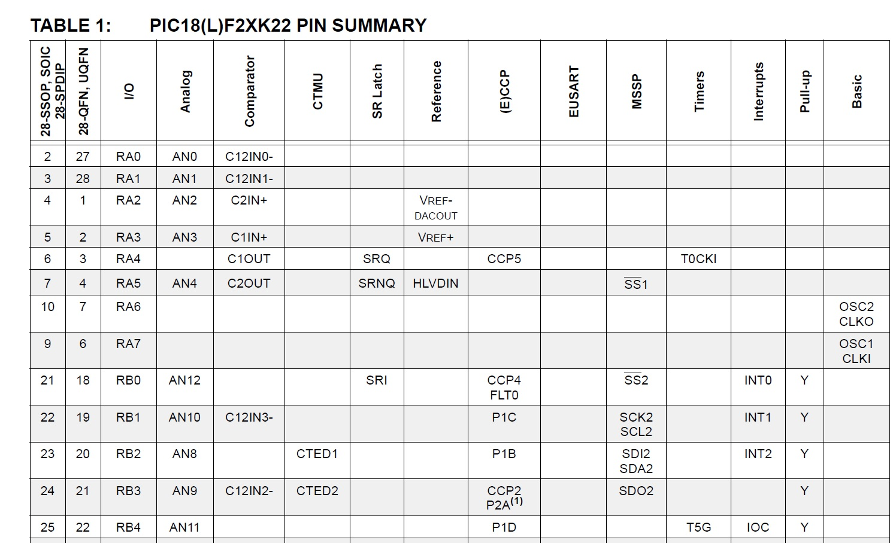

| Lecture: | 7 |
| Objcetive: | Understand the relationship between electrical signals at I/O pins and the digital values contained in the PORT and LAT registers. Understand active high and low input and output circuits using buttons and LEDs respectively. |
Basic I/O
By now you should have a better understanding of the C programming language, so it's time to put this knowledge to use. We will start with some examples of how to interact with simple input and output devices in the form of an LED and push button.I/O pins
It's well past time to examine the processor that you will be working with for the remainder of the term, the PIC18F26K22. The chip and the identities of its pins are listed in the figure below, taken from the PIC18F26K22 Data Sheet. Note that the PIC you soldered to the PCB came in what is called a 28 pin small outline integrated circuit (28-SOIC) package.
Most of the pins are labeled "Rx#". The letter R stands for "Register", the "x" is the identity of the register and "#" is the bit withing that port register. So, for example, RC1 is bit 1 of the port C register. Some of the registers have several names seperated with a "/" character. These pins are functionally multiplexed, meaning that several internal functions of the PIC are routed to the same pin. For example, the pin labeled "RB7/PGD" can be configured to be RB7 or the program data line (we will explore what this means later). Using an internal multiplexer, your code will choose which of these functions is assocaiated with the pin. When a pin is configured as "Rx#", it is said to be configured as a general purpose input output (GPIO). Meaning that you can only read/write bits from/to that pin. What the pin diagram above fails to communicate is that almost every pin on the PIC is functionally multiplex.
To appreciate all the options available to each pin you need to open up the PIC18F26K22 Data Sheet, go to page 8 and look at Table 1 (partially reproduced below). To read this table, find the I/O pin you are interested in (From the leftmost 28-SOIC column) and then go across that row to function the functions mutiplex with that pin. For example, pin 2 of the PIC18F26K22 is associated with I/O RA0, Analog AN0, and Comparator C12IN0-. Note, that at a given instant in time, you can have only one function associated with a pin. At this time, there are only two columns in Table 1 you are expected to understand, the pin number in the 28-SOIC column and the GPIO in the I/O column. You should also note that these two columns are consistent with the pin diagram above.

Every port pin of the PIC (and for most GPIO microcontroller pins for that matter) has two configuration registers associated with it, a data direction register (TRIS) and a port value register (PORT). A data direction regsters determines if a pin is configured as an input or an output. Accessing the data direction bits is simplified by the definitions in the "xc.h" include file provided to you through the MPLAB X development environment. To access the data direction bit for a pin labeled "Rx#", use "TRISxbits.TRISx#". Note, "x" the port letter and "#" is the bit within that port. Setting a TRIS bit makes the associated pin an input (the number "1" is shaped like the letter "i" in the word "input"), clearing the bit makes the pin an output (the number "0" is shaped like the letter "o" in the word "output"). So for example to make pin 2 of the PIC18F26K22, which is RA0, an output you would use the statement "TRISAbits.TRISA0 = 0;" in your code. You can read a value from a pin labeled "Rx#" using "PORTxbits.Rx#". You can write a value to a pin labeled "Rx#" using "LATxbits.LATx#". So for example, if you wanted to write a logic 1 to pin 2, RA0, after making it an output, you would use the statement "LATAbits.LATA0 = 1;"
When working with input pins that are functionally multiplex with analog to digital converter channels (Analog column in Table 1 above) you must configure inputs to be digital by clearing the associated analog select bit. An input is configured to be a digital input when its associated analog select bit is cleared (assigned 0). This will be done in the code snippet below.
Putting this all together, the following is an simple example program to configure two of the PIC pins. We will configure the data direction bits, read a value from RA0 and write a value to RA1.
ANSELAbits.ANSA2 = 0; // Inputs multiplex with ADC need digitized
TRISAbits.TRISA2 = 1; // setting the TRIS bit makes RA2 an input
if (PORTAbits.RA2 == 1) printf("RA2 is at logic 1\r\n");
Each of the PORT, TRIS and LAT registers is associated with
One final point involves the translation between logical values inside
your program and the physical values present on the pins. Your programs
will operate with 1's and 0's. In the real world outside your program
and the PIC, these logical values correpond to 3.3V and 0V. When you
configure a pin as an input, the PIC will classify a range of voltages
as logic levels.
| Voltage Range | Classified logic values | Parameter |
| 0V to 0.5V | Logic 0 | VIL |
| 1.7V to 3.3V | Logic 1 | VIH |
Summarize
- Some pins are for power,
- Some pins have one function,
- When a pin has more than one potential function,
- Its label contains one or more "/" characters,
- Its said to be functionaly multiplexed.
- A pin with no predetermined function is said to be a general purpose input output (GPIO) pin,
- GPIO pins are arranged into related sets called ports,
- Ports are given letters,
- A GPIO pin is uniquely identified by its port and number,
- GPIO pins can be configured as inputs or outputs through a TRIS register
- Writing a 0 into a TRIS bit make the correponding pin an output,
- Writing a 1 into a TRIS bit make the correponding pin an input,
- The logic levels 0 and 1 inside a program correspond to voltages outside the PIC,
- The value present on a GPIO pin (configured as an input) can be read through the port value register,
- A range of voltages are classisifed as each logic level,
- The value on a GPIO pin (configured as an output) can be written through the port value register.
Test your understanding
You can find the solutions embedded in the "source code" for this web page by right mouse clicking on this web page and selecting "view source". The solutions are in HTML comments.- Write a code snippet that configures the GPIO pins for a pair of push buttons on RA2 and RA3 (make these inputs) and an LED connected to RB5 (an output).